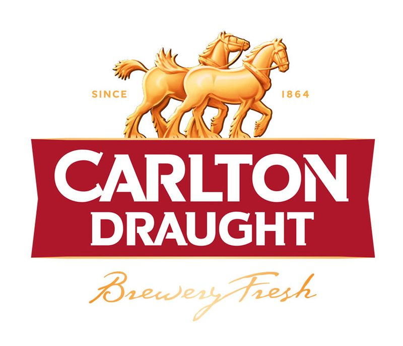
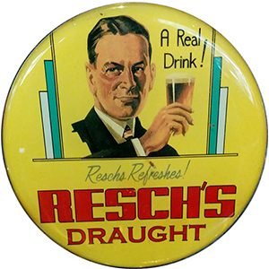
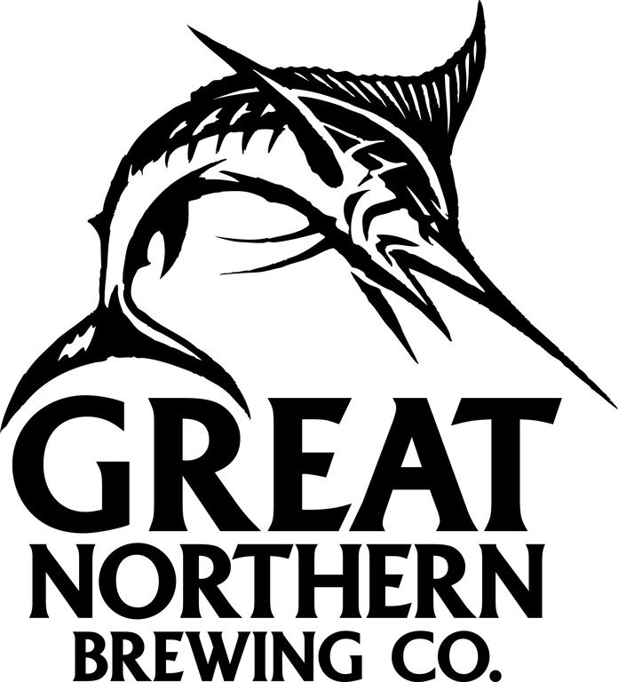
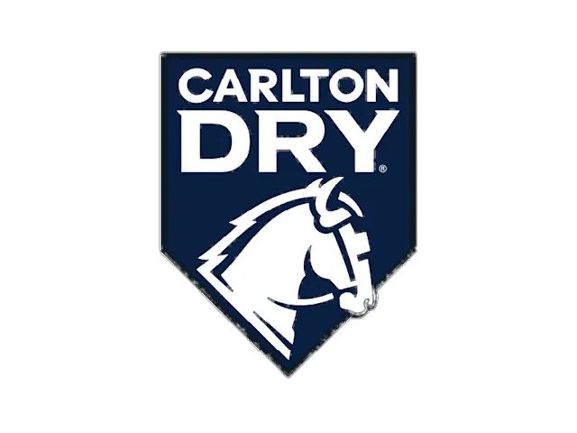
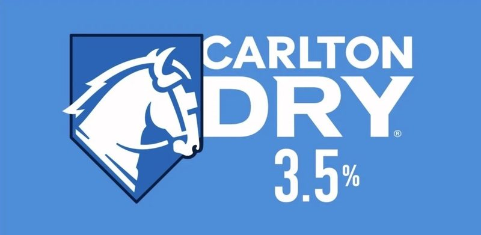
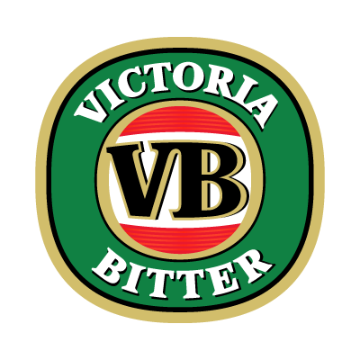
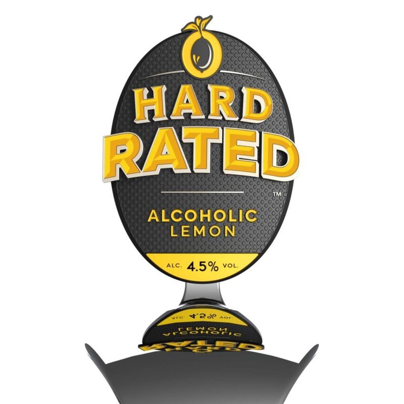

Drink
Eight taps, ice cold, and best enjoyed in front of the wood fire.
A full strength Australian lager with a smooth light body and a crisp, refreshing finish. Brewed with Australian pale malt, signature lager yeast and a blend of Cluster & Melba hops.
ABV 4.2% · Low Carb
A traditional, full-strength lager with a good malt character and smooth full-bodied flavour. Clean hop bitterness gives the brew a slightly dry finish.
ABV 4.6%
This iconic NSW brew is a fruity, golden lager — perfect for those nostalgic summer days.
ABV 4.5%
Meet your new favourite lager. Brewed using all Australian ingredients — clean, crisp, mildly fruity with a smooth bitterness that keeps you coming back.
ABV 3.5% · Ultra Low Carb
Light golden in colour with a fruity aroma, subtle bitterness and light palate. Refreshingly clean and crisp finish.
ABV 4.2%
Signature ultra smooth refreshment — a little fruity, low in bitterness. Because it’s Carlton Dry.
ABV 3.5%
First brewed by Thomas Aitken in 1854 — full flavoured, full strength and thirst quenching, made for the harsh Australian climate. Clean hop bitterness, sweet maltiness and a light, fruity aroma.
Full Strength
True to an original lemon flavour, Hard Rated is made with crushed lemons to deliver a refreshing lemon taste with an alcoholic kick.
ABV 4.5%